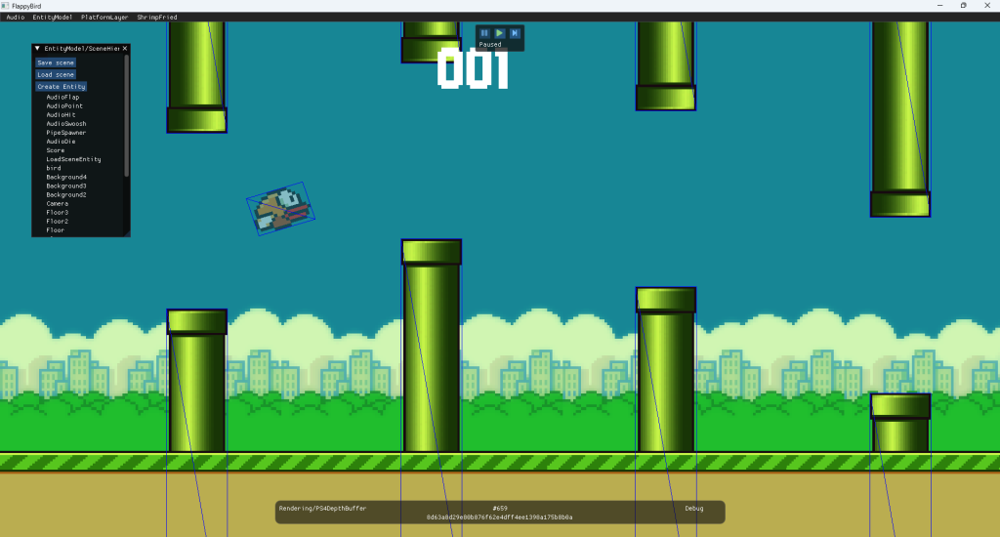

This project was completed as part of the Cross-Platform Engine Development module at Staffs Uni and involved working with a team of 8 others to create a 2D game engine that has parity on at least 2 platforms. For this project, I was solely responsible anything graphics related which mostly manifested in the creation of a graphics abstraction layer as well as additional features that make use of said API. We chose to have our engine run on Desktop and PS4 so my abstraction layer was created with these specific platforms in mind.
It was my primary responsibility to allow for other members of the team to render what they needed to easily. I chose to model the abstraction layer after D3D11 due to its simplistic design and the fact that I had chosen it as the Desktop background. After some research, the PS4 graphics libraries also shared many similarities to D3D11 so I believed it to be a sensible choice, although I cannot speak of the PS4 specifics.
I created the rendering abstraction layer to allow for our engine to render on multiple platforms using the same rendering logic. It was my goal to make it as lightweight and simple to understand as possible. The API implementation can therefore be suited more towards the strengths of the API rather than the construction of the abstraction layer. When designing the calls that the abstraction layer can make I made my aim to hide all common settings and expose only what differentiated objects. For example, to create a texture the only values that must be passed through are the resolution and an enum describing the data format (r8g8b8 etc...).
The same principle can be seen with the components exposed to the rest of the engine. In scripting code, no considerations as to the inner workings of the renderer have to be made regardless of the platform that is being targeted which was always the overall goal.
The abstraction layer supports a number of features including:
These features range from basic features one would expect to more advanced features such as animation. Expanding the abstraction layer to account for more complex features was a fairly simplistic and smooth process due to the design of the layer; in most cases, each abstract class has a very clear purpose. I followed good practices throughout, paying particular attention to efficiency and safety. At one point in development, pointer aliasing became an issue but this was remedied by making use of shared pointers throughout the abstraction layer instead.
To take animation as an example of a further feature, I created the animation manager with the attempt to be as memory efficient as well as suitably designed as possible. This manager is a singleton class that handles selecting the right frame of the animation to be presented when given an entities unique ID. All of the textures for each frame of the animation are all also cached when they are created. Animation was decided upon due to the fact it easily allows for greater expression in 2D games with relatively little work needed to be done.
This code snippet shows the function called to retrieve the current frame which attempts to early out when possible:
AnimationFrame* AnimationManager::GetCurrentFrame(std::uint64_t id)
{
SF_PROFILE_FUNCTION();
AnimationFrame* currentFrame = nullptr;
auto it = m_animatedSprites.find(id);
AnimatedSprite* sprite = nullptr;
if (it != m_animatedSprites.end())
{
sprite = &it->second;
}
else
{
return currentFrame;
}
if (sprite->m_animation->m_frames.empty())
{
//if no animation data, then add sprite normally
return currentFrame;
}
if (m_animatedSpriteTimers.find(id) == m_animatedSpriteTimers.end())
{
return &sprite->m_animation->m_frames.back();
}
double& currentTime = m_animatedSpriteTimers[id];
bool isLastFrame = false;
for (size_t i = 0; i < sprite->m_animation->m_frames.size(); i++)
{
if (currentTime < sprite->m_animation->m_frames[i].m_time)
{
if (i > 0)
{
currentFrame = &sprite->m_animation->m_frames[i - 1];
}
else
{
currentFrame = &sprite->m_animation->m_frames[0];
}
break;
}
}
if (!currentFrame)
{
currentFrame = &sprite->m_animation->m_frames.back();
isLastFrame = true;
if (currentTime > sprite->m_animation->m_duration)
{
if (sprite->m_animation->m_isLooping == true)
{
currentTime = 0.0;
}
else
{
m_animatedSpriteTimers.erase(id);
}
}
}
return currentFrame;
}
This screenshot shows the debug rendering feature:

Allocating memory properly on the PS4 was a particular roadblock. There exist multiple different allocators with differing properties that are used throughout the PS4 sample code that have little documentation that comes alongside them. Following the tutorial graphics programming led to incorrect allocation of texture memory that could not be freed resulting in VRAM becoming filled up very quickly. The texture caches helped to slow down the effect o f this bug which meant that development could proceed for the most part whilst the long process of finding a suitable solution took place. In the end, the solution ended up being to use linear allocators for everything but textures and the to use two separate stack allocators for sprite and text textures. This setup allows the renderer to free the textures when needed without corrupting other areas of the VRAM.
Build by Neil Punj
Physics by Johnathan Davidson
Audio by Edward Hill
Input by Abi Radage-Revell
AI by Emmie Harris
Serialisation by Alex Connor
Utilities by Sam Fairclough
Logging by James Durant
This project was worked on from March 2025 - May 2025
The font and animation classes were particularly well designed and implemented. They both make use of a singleton structure which allows them to be accessible via scripting if necessary. Both of these systems cache everything they can when it makes sense to do so. For example, all textures for sprites and fonts are cached and are cleared and recreated when necessary such as upon scene loading. These caches can also be cleared in scripting for more manual control. The debug rendering feature proved to be a valuable time investment due to how it aided in the development of other systems. The feature is implemented by placing an interface class called IDebugRenderer in the core library so that it is accessible to everyone developing in their own libraries. This interface class is then overwritten in the renderer itself. The functions exposed include drawing a wireframe box and wireframe lines with different colours.
More abstract classes were implemented than needed which resulted in some classes not being relevant and therefore unimplemented on either platform. Namely, the input layout class goes completely unused on PS4 as a similar concept does not really exist. There are also classes that are relevant on all platforms but I believe should be more abstracted such as shaders. It would be an improvement to how they are handled if a shader manager existed which handled shaders in a manner similar to how Anagnostou does. This would allow for shader creation to potentially be customised in scripts, which would increase the flexibility of the renderer by a great deal. I should have planned my systems with cross platform considerations playing a greater role. Şentürk (2020) warns that overly generalized abstraction layers often sacrifice performance or API-specific features.
Şentürk, Sarp. "Graphics API Abstractions - Part I." Medium, 2020.
Rhys Elliott 2025. rhyselliottdev@protonmail.com